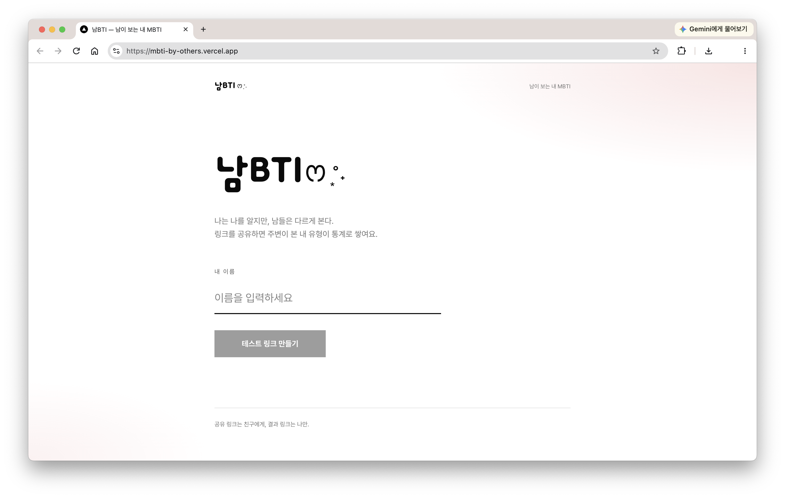

개인 프로젝트
2026
Overview
'남BTI'는 주변 사람들이 바라보는 나의 MBTI를 모아 확인할 수 있는 테스트 웹 서비스입니다. 기존 MBTI 테스트가 스스로 생각하는 성향을 알아보는 방식이라면, 남BTI는 주변 사람들의 응답을 통해 타인이 바라보는 나의 성향을 확인할 수 있도록 기획했습니다.
사용자가 이름을 입력하면 개인별 테스트 링크와 결과 확인용 비밀 링크가 생성됩니다. 공유 링크를 전달받은 지인들은 질문에 응답하고, 누적된 응답은 결과 페이지에서 MBTI 유형별 비율과 TOP 5 순위 등 다양한 통계로 확인할 수 있습니다.
Cursor AI와 MCP 도구를 활용해 서비스를 제작하고, 실제 사용자 피드백을 반영해 테스트 문항과 화면 구성, 공유 기능 등을 개선했습니다.
Work Detail
Tech Stack
Tool

서비스 기획 및 사용자 흐름 구성
주변 사람들이 바라보는 나의 성향을 확인한다는 아이디어를 바탕으로 서비스의 주요 기능과 사용자 흐름을 구체화했습니다.
사용자가 이름을 입력하면 개인별 테스트 링크와 결과 확인용 비밀 링크가 생성되도록 구성했습니다. 테스트 링크를 전달받은 지인들은 질문에 응답하고, 테스트 생성자는 별도의 결과 링크를 통해 누적된 응답과 통계를 확인할 수 있도록 했습니다.
테스트 생성부터 응답 수집, 결과 확인까지 이어지는 흐름을 중심으로 서비스를 구성하고, PC와 모바일 환경에서 이용할 수 있도록 반응형 웹으로 제작했습니다.
MBTI 테스트 및 유형 산출 기능
테스트 생성자에 대한 주변 사람들의 인식을 확인할 수 있도록 MBTI 4개 지표(E/I, S/N, T/F, J/P)에 따라 문항을 구성하고, 각 문항에 7점 척도로 응답할 수 있도록 했습니다.
각 문항을 MBTI 지표에 매핑하고 응답값을 바탕으로 지표별 점수를 계산해 최종 유형을 산출하는 방식으로 구성했습니다.
이름 입력값에 따라 문항 내 조사(은/는)가 자연스럽게 적용되도록 처리했으며, 응답자의 닉네임은 선택적으로 입력할 수 있도록 해 익명 응답도 지원했습니다.
Supabase 데이터 연동 및 결과 통계
Supabase(PostgreSQL)를 연동해 테스트 생성 정보와 지인들의 응답 데이터를 저장하고, 결과 페이지에서 누적된 데이터를 조회할 수 있도록 구성했습니다.
동일한 사용자가 여러 번 응답할 수 있도록 했으며, 누적된 응답 데이터를 바탕으로 최신 및 최다 MBTI 유형, TOP 5 유형과 유형별 응답 비율을 집계해 보여주도록 구성했습니다.
전체 응답 수와 최근 응답 목록도 함께 제공해 여러 사람의 응답이 누적되는 과정과 전체적인 결과 분포를 확인할 수 있도록 했습니다.
사용자 피드백 기반 서비스 개선
서비스 완성 후 실제 사용자에게 테스트를 요청하고 사용 과정에서 발견된 불편 사항을 수집했습니다. 최초 60개로 구성했던 테스트 문항이 응답에 많은 시간을 소요한다는 의견을 반영해, MBTI 4개 지표를 구분하는 데 필요한 문항을 중심으로 질문 수를 24개까지 축소했습니다.
이외에도 테스트 화면과 결과 화면의 레이아웃 및 정보 배치를 조정하고, 다른 사람에게 결과를 쉽게 전달할 수 있도록 외부 앱 공유와 결과 카드 이미지 저장 기능을 추가했습니다.
개발 과정에서는 Cursor AI에 기능별 요구사항을 프롬프트로 전달하고, Sequential Thinking MCP를 활용해 복잡한 요구사항을 단계적으로 검토했습니다. Supabase MCP Server 등 프로젝트에 적합한 도구는 Cursor AI의 제안을 바탕으로 활용했습니다. 생성된 결과물은 브라우저에서 확인하고, 오류 발생 시 원인 분석과 수정을 추가로 요청하는 방식으로 서비스를 완성했습니다.
다음 프로젝트
별들에게 물어봐!